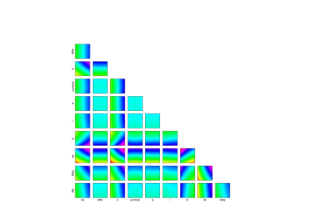

FunctionalChaosSobolIndices¶
- class FunctionalChaosSobolIndices(*args)¶
Sensitivity analysis based on functional chaos expansion.
- Parameters:
- result
FunctionalChaosResult A functional chaos result resulting from a polynomial chaos expansion.
- result
Notes
This structure is created from a
FunctionalChaosResultin order to evaluate the Sobol’ indices associated to the polynomial chaos expansion of the model. TheDrawSobolIndices()static method can be used to draw the indices.This class provides methods to estimate the Sobol’ indices which are presented in Sensitivity analysis using Sobol’ indices. These indices can be easily computed from the polynomial chaos expansion using the methods presented in Sensitivity analysis using Sobol’ indices from polynomial chaos expansion.
The next table presents the map from the Sobol’ index to the corresponding method.
Single variable or group
Sensitivity Index
Notation
Method
One single variable

First order

getSobolIndex(i)
Total

getSobolTotalIndex(i)
Group interaction

First order

getSobolIndex(variableIndices)
Total interaction

getSobolIndex(variableIndices)
Group (closed)
First order closed

getSobolGroupedIndex(variableIndices)
Total

getSobolGroupedTotalIndex(variableIndices)
Table 1. Sobol’ indices and the corresponding methods.
Examples
Create a polynomial chaos for the Ishigami function:
>>> import openturns as ot >>> from math import pi >>> import openturns.viewer as otv
Create the function:
>>> ot.RandomGenerator.SetSeed(0) >>> formula = ['sin(X1) + 7. * sin(X2)^2 + 0.1 * X3^4 * sin(X1)'] >>> input_names = ['X1', 'X2', 'X3'] >>> g = ot.SymbolicFunction(input_names, formula)
Create the probabilistic model:
>>> distributionList = [ot.Uniform(-pi, pi)] * 3 >>> distribution = ot.ComposedDistribution(distributionList)
Create a training sample:
>>> N = 100 >>> inputTrain = distribution.getSample(N) >>> outputTrain = g(inputTrain)
Create the chaos:
>>> chaosalgo = ot.FunctionalChaosAlgorithm(inputTrain, outputTrain, distribution) >>> chaosalgo.run() >>> result = chaosalgo.getResult()
Print Sobol’ indices (see Compute grouped indices for the Ishigami function for details):
>>> chaosSI = ot.FunctionalChaosSobolIndices(result) >>> #print(chaosSI) # Prints a table of multi-indices
Get first order Sobol’ index for X0:
>>> s0 = chaosSI.getSobolIndex(0) >>> print('S(0) = ', s0) S(0) = 0.26...
Get total Sobol’ index for X0:
>>> st0 = chaosSI.getSobolTotalIndex(0) >>> print('ST(0) = ', st0) ST(0) = 0.48...
Get interaction Sobol’ index for the group (X0, X1):
>>> s01 = chaosSI.getSobolIndex([0, 1]) >>> print('S([0, 1]) = ', s01) S([0, 1]) = 0.00...
Get total interaction Sobol’ index for the group (X0, X1):
>>> st01 = chaosSI.getSobolTotalIndex([0, 1]) >>> print('ST([0, 1]) = ', st01) ST([0, 1]) = 0.00...
Get first order Sobol’ index for group [X0,X1]:
>>> sg01 = chaosSI.getSobolGroupedIndex([0,1]) >>> print('SG([0, 1]) = ', sg01) SG([0, 1]) = 0.76...
Get total Sobol’ index for group [X0,X1]:
>>> stg01 = chaosSI.getSobolGroupedTotalIndex([0,1]) >>> print('STG([0, 1]) = ', stg01) STG([0, 1]) = 0.99...
Get the part of variance of first multi-indices:
>>> partOfVariance = chaosSI.getPartOfVariance()
Methods
Accessor to the object's name.
Accessor to the functional chaos result.
getId()Accessor to the object's id.
getName()Accessor to the object's name.
getPartOfVariance([marginalIndex])Get the part of variance corresponding to each multi-index.
Accessor to the object's shadowed id.
getSobolGroupedIndex(variableIndices[, ...])Get the Sobol first order (closed) indices of a group of input variables.
getSobolGroupedTotalIndex(variableIndices[, ...])Get the Sobol' total index of a group of input variables.
getSobolIndex(*args)Get the first order Sobol' index of an input variable or the interaction (high order) index of a group of variables.
getSobolTotalIndex(*args)Get the total Sobol' index of an input variable or the interaction total index of a group of variables.
Accessor to the object's visibility state.
hasName()Test if the object is named.
Test if the object has a distinguishable name.
setName(name)Accessor to the object's name.
setShadowedId(id)Accessor to the object's shadowed id.
setVisibility(visible)Accessor to the object's visibility state.
- __init__(*args)¶
- getClassName()¶
Accessor to the object’s name.
- Returns:
- class_namestr
The object class name (object.__class__.__name__).
- getFunctionalChaosResult()¶
Accessor to the functional chaos result.
- Returns:
- functionalChaosResult
FunctionalChaosResult The functional chaos result resulting from a polynomial chaos decomposition.
- functionalChaosResult
- getId()¶
Accessor to the object’s id.
- Returns:
- idint
Internal unique identifier.
- getName()¶
Accessor to the object’s name.
- Returns:
- namestr
The name of the object.
- getPartOfVariance(marginalIndex=0)¶
Get the part of variance corresponding to each multi-index.
- Parameters:
- marginalIndexint
Output marginal index. Default value is 0, i.e. the first output.
- Returns:
- partOfVariance
Point The part of variance partOfVariance[i] of each multi-index, for i = 0, …, indicesSize - 1 where indicesSize is the number of indices. The part of variance of a given multi-index is in the [0, 1] interval. This is a sensitivity index which represents the part of the variance explained by the corresponding function. The sum of part of variances is equal to 1. If the corresponding multi-index has total degree equal to 0, then the corresponding part of variance is equal to zero.
- partOfVariance
- getShadowedId()¶
Accessor to the object’s shadowed id.
- Returns:
- idint
Internal unique identifier.
- getSobolGroupedIndex(variableIndices, marginalIndex=0)¶
Get the Sobol first order (closed) indices of a group of input variables.
Let
 the list of variable indices
in the group.
Therefore, the method computes the first order (closed) Sobol’ index
of the group .
the list of variable indices
in the group.
Therefore, the method computes the first order (closed) Sobol’ index
of the group .- Parameters:
- variableIndicessequence of int,

Indice(s) of the variable(s) in the group.
- marginalIndexint
Output marginal index. Default value is 0, i.e. the first output.
- variableIndicessequence of int,
- Returns:
- sfloat
The grouped Sobol’ first order index.
- getSobolGroupedTotalIndex(variableIndices, marginalIndex=0)¶
Get the Sobol’ total index of a group of input variables.
Let
the list of variable indices
in the group.
Therefore, the method computes the total Sobol’ index of
the group .- Parameters:
- variableIndicessequence of int,
Indice(s) of the variable(s) in the group.
- marginalIndexint
Output marginal index. Default value is 0, i.e. the first output.
- variableIndicessequence of int,
- Returns:
- sfloat
The grouped Sobol’ total index.
- getSobolIndex(*args)¶
Get the first order Sobol’ index of an input variable or the interaction (high order) index of a group of variables. This function can take a single variable or a group of variables as input argument.
Case 1: single variable. Let
 the index of an input
variable.
Therefore, the method computes the first order Sobol’ index
of the variable
the index of an input
variable.
Therefore, the method computes the first order Sobol’ index
of the variable  .
.Case 2: group of variables. Let
the list of variable indices
in the group.
Therefore, the method computes the interaction (high order) Sobol’
index of the group .- Parameters:
- iint or sequence of int,
Indice(s) of the variable(s).
- marginalIndexint
Output marginal index. Default value is 0, i.e. the first output.
- iint or sequence of int,
- Returns:
- sfloat
The first order Sobol’ index.
- getSobolTotalIndex(*args)¶
Get the total Sobol’ index of an input variable or the interaction total index of a group of variables. This function can take a single variable or a group of variables as input argument.
Case 1: single variable. Let
the index of an input
variable.
Therefore, the method computes the total index
of the variable .Case 2: group of variables. Let
the list of variable indices
in the group.
Therefore, the method computes the total interaction (high order)
Sobol’ index of the group .- Parameters:
- iint or sequence of int,
Indice(s) of the variable(s).
- marginalIndexint
Output marginal index. Default value is 0, i.e. the first output.
- iint or sequence of int,
- Returns:
- sfloat
The total Sobol’ index.
- getVisibility()¶
Accessor to the object’s visibility state.
- Returns:
- visiblebool
Visibility flag.
- hasName()¶
Test if the object is named.
- Returns:
- hasNamebool
True if the name is not empty.
- hasVisibleName()¶
Test if the object has a distinguishable name.
- Returns:
- hasVisibleNamebool
True if the name is not empty and not the default one.
- setName(name)¶
Accessor to the object’s name.
- Parameters:
- namestr
The name of the object.
- setShadowedId(id)¶
Accessor to the object’s shadowed id.
- Parameters:
- idint
Internal unique identifier.
- setVisibility(visible)¶
Accessor to the object’s visibility state.
- Parameters:
- visiblebool
Visibility flag.
Examples using the class¶


Create a polynomial chaos for the Ishigami function: a quick start guide to polynomial chaos



Example of sensitivity analyses on the wing weight model